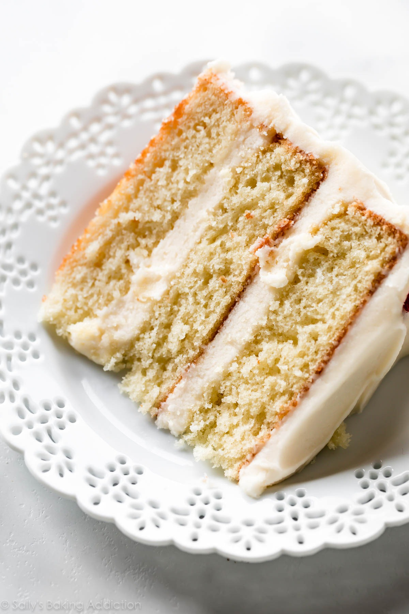

Cake
With its outstanding vanilla flavor, pillowy soft crumb, and creamy vanilla buttercream, this is truly the best vanilla cake I've ever had. Make sure you read through the recipe and recipe notes before beginning. This recipe yields approximately 8 cups of batter which is helpful if you need this batter for different cake pans and conversions.
Ingredients
-
3 and 2/3 cups (433g) cake flower (spoon & leveled)
-
1 teaspoon salt
-
2 teaspoons baking powder
-
3/4 teaspoon baking soda
-
1 and 1/3 cups (345g) unsalted butter, softened to room temperature
-
2 cups (400g) granulated sugar
-
3 large eggs + 2 additional egg whites, at room temperature*
-
1 Tablespoon pure vanilla extract (yes, Tbsp!)
-
1 and 1/2 cups (360ml) buttermilk, at room temperature*
Vanilla Buttercream
-
1 and 1/3 cups (345g) unsalted butter, softened to room temperature
-
5 and 1/2 cups (650g) confectioners' sugar
-
1/3 cup (80ml) whole milk or heavy cream
-
1 and 1/2 teaspoons pure vanilla extract
-
1/8 teaspoon salt
Instructions
-
Preheat oven to 350°F (177°C). Grease three 9-inch cake pans, line with parchment paper, then grease the parchment paper. Parchment paper helps the cakes seamlessly release from the pans.
-
Make the cake: Whisk the cake flour, salt, baking powder, and baking soda together. Set aside.
-
Using a handheld or stand mixer fitted with a paddle or whisk attachment, beat the butter and sugar together on high speed until smooth and creamy, about 3 minutes. Scrape down the sides and up the bottom of the bowl with a rubber spatula as needed. Beat in the 3 eggs, 2 egg whites, and vanilla extract on high speed until combined, about 2 minutes. (Mixture will look curdled as a result of the egg liquid and solid butter combining.) Scrape down the sides and up the bottom of the bowl as needed. With the mixer on low speed, add the dry ingredients just until combined. With the mixer still running on low, pour in the buttermilk and mix just until combined. You may need to whisk it all by hand to make sure there are no lumps at the bottom of the bowl. The batter will be slightly thick.
-
Pour batter evenly into cake pans. Weigh them to ensure accuracy, if desired. Bake for around 23-26 minutes or until the cakes are baked through. To test for doneness, insert a toothpick into the center of the cake. If it comes out clean, it's done. Allow cakes to cool completely in the pans set on a wire rack. The cakes must be completely cool before frosting and assembling.
-
Make the frosting: In a large bowl using a hand-held mixer or stand mixer fitted with a whisk or paddle attachment, beat the butter on medium speed until creamy, about 2 minutes. Add confectioners' sugar, milk, vanilla extract, and salt with the mixer running on low. Increase to high speed and beat for 2 minutes. Add more confectioners' sugar if frosting is too thin, more milk if frosting is too thick, or an extra pinch of salt if frosting is too sweet.
-
Assemble and decorate: Using a large serrated knife, slice a thin layer off the tops of the cakes to create a flat surface. Discard (or crumble over ice cream!). Place 1 cake layer on your cake stand, cake turntable, or serving plate. Evenly cover the top with about 1 and 1/2 cups of frosting. Top with 2nd cake layer and evenly cover the top with about 1 and 1/2 cups of frosting. Top with the third cake layer. Spread the remaining frosting all over the top and sides. I use and recommend an icing spatula to apply the frosting.
-
Refrigerate cake for at least 1 hour before slicing. This helps the cake hold its shape when cutting.
-
Cover leftover cake tightly and store in the refrigerator for up to 5 days.
Should look exactly like this:
